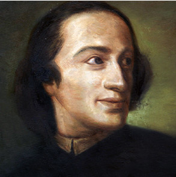
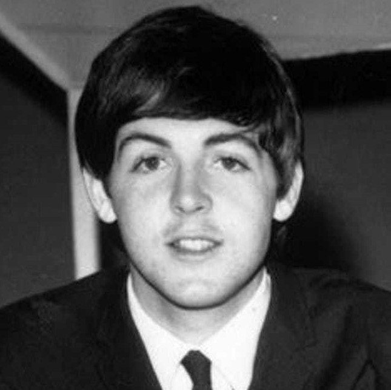

De l'inspiration à la composition
D'où vient l'inspiration ?
Épineuse question, n'est-ce pas ? Si vous la posez à des artistes, ils vous livreront sûrement les moyens qu'ils utilisent pour stimuler leur créativité. Mais il y a une chose sur laquelle ils seront tous d'accord : l'inspiration ne se commande pas. Elle vient sans crier gare, et s'en va quand elle veut. C'est donc à nous d'être vigilants, pour ne pas oublier l'idée qui nous a été inspirée. Cette idée peut être (dans le cas de la musique) un accord, une phrase mélodique, et parfois même une œuvre entière ! Elle peut surgir à tout moment, même lorsqu'on dort. Difficile à croire, n'est-ce pas ? Laissez moi vous donner quelques exemples :
-

1692-1770
Giuseppe Tartini
À propos de sa Sonate des trilles du Diable, il raconte : « J'ai rêvé une nuit que j'avais scellé un pacte avec le Diable pour le prix de mon âme. Tout obéissait à ma volonté, mon nouveau serviteur connaissait d'avance tous mes souhaits. Alors me vint l'idée de lui confier mon violon et d'attendre ce qu'il en tirerait. Quel ne fut pas mon étonnement lorsque je l'entendis jouer, avec un art consommé, une sonate d'une beauté telle que je n'aurais pu en imaginer de plus belle. J'étais stupéfait et charmé, le souffle court et je me réveillai. Je saisis alors mon violon et essayai de reproduire cette sonorité extraordinaire.»
-

1813-1883
Richard Wagner
En parlant de son opéra Tristan et Isolde le compositeur écrit que « j'ai rêvé tout cela. Jamais ma pauvre tête n'aurait pu inventer une telle chose délibérément. »
-

1942-
Paul McCartney
Alors qu'il dormait chez sa petite amie, Paul rêve d'un orchestre jouant une mélodie qui lui est inconnue. Lorsqu'il se réveille le lendemain matin, il retranscrit cette mélodie sur son piano. Sûr d'avoir accidentellement plagié un autre artiste, il cherche, pendant plus d'un mois, le vrai propriétaire de celle-ci. Ces recherches étant infructueuses, il doit se rendre à l'évidence : ce morceau est le fruit de sa composition ! Qu'est-elle devenue ? Après que les paroles ont été écrites, elle a été nommée Yesterday.
Ces quelques exemples nous ont montré qu'il était possible d'avoir de l'inspiration, et même de composer de la musique tout en dormant. Qu'en est-il alors de lorsqu'on est éveillé ? Sommes nous voués à devoir dormir pour composer de la musique ? Cette question, bien qu'absurde, soulève celle de la stimulation de l'inspiration. Est-ce possible de favoriser la venue de l'inspiration ? Quoi de mieux pour nous répondre que des professionnels !

- Kenneth Nilsen aka K-391
- Producteur de musique électronique
- 23 ans
- 640 000 fans sur Youtube
- Bernd Schneider
- Professeur de piano
- Directeur du Helge Ankers Musikinstitutt
- 35 ans
J'ai eu l'occasion de leur poser quelques questions à propos de leur manière de composer.
Comment trouvez vous l'inspiration ? Est-ce qu'il y a des moments où vous vous sentez plus inspirés ? Connaissez vous des méthodes pour stimuler votre inspiration ?
K.N : C'est difficile d'expliquer ce qu'est l'inspiration, car je considère que c'est surtout un mode de vie. J'ai choisi de toujours m'inspirer de tout, et toujours apprendre de nouvelles choses. L'inspiration vient sous de nombreuses formes, mais c'est compliqué de toujours être inspiré. Même chose avec les sentiments : bien qu'ils fluctuent beaucoup selon des réactions chimiques dans notre cerveau, on peut choisir de toujours vouloir être heureux.
B.S : J'essaie souvent de m'installer dans une pièce où règne un calme absolu. De temps en temps, je me lève et tourne un peu en rond dans la pièce. Dans certains cas, je pars faire un jogging, en emmenant mon téléphone seulement pour enregistrer les idées qui me viennent à l'esprit. En réalité, il n'y a pas de moments spéciaux : une idée viendra à un moment ou un autre. Alors je l'écris, puis je travaille avec cette idée pendant plusieurs jours. Je la joue au piano, et je note des détails à perfectionner etc. Concernant la manière de stimuler l'inspiration, je dirais qu'il faut se sentir soi-même, bien dans sa peau. J'ai pour habitude de faire du sport le matin, puis prendre une douche et manger un bon petit-déjeuner, pour évacuer le stress et me sentir vraiment d'attaque avant de vouloir composer.
Utilisez vous un ordinateur lorsque vous composer ? Si oui, de quelle manière ?
K.N : Oui, j'ai monté mon propre PC pour répondre à mes besoins précis. Je produis tout à l'aide du logiciel Fruity Loop Studio.
B.S : J'utilise mon ordinateur avec Sibelius (un logiciel d'édition de partition) et un piano connecté en MIDI. Et comme précisé, j'utilise aussi mon téléphone pour enregistrer les idées dès qu'elles me viennent.
Que pensez vous de l'utilisation de l'IA dans la musique ? Selon vous, y a-t-il un futur pour cette technologie dans l'industrie musicale ?
K.N : Je pense que ça peut être un bon moyen de commencer la production musicale. Ca peut être très utile, pour faire le mixage et le mastering par exemple. Cependant, je pense que la musique sera toujours empreinte de l'essence de son créateur, et devra donc être écrite par un humain pour ne pas la perdre, pour garder cette trace de vie. Ce sera d'ailleurs le cas pour toute production artistique selon moi. Absolument, il y a un futur pour l'IA ! J'utilise déjà des logiciels qui analysent le projet entier et réalisent le mixage automatiquement. Mais c'est une technologie incroyablement complexe, et personnellement, je ne m'en sers que pour des tâches subsidiaires.
B.S : Cela me semble très intéressant. Mais d'un autre côté, vais-je travailler à « tuer mon métier » ? (rire). On constate aujourd'hui que les machines se chargent en tout cas des opérations systématiques et répétitives. Je pense que l'on peut aller très loin avec l'IA, mais pas jusqu'à la complète autonomie. Une composition est quelque chose de vivant, qui demeure dans le temps, marqué entre autres par l'environnement du compositeur. Cette part vivante, qui est comme la cerise sur le gâteau de l'oeuvre, sera selon moi difficile à répliquer avec des machines. Mais je suis impatient de voir ce qu'il en adviendra.
L'inspiration est décidément une source mystérieuse. Comment alors espérer créer des ordinateurs qui puissent composer de la musique, s'il n'ont pas d'inspiration ? Il n'est certes pas possible de modéliser une inspiration. Heureusement, il existe un lien très fort entre la musique et un domaine dont les machines sont très friandes : les mathématiques.